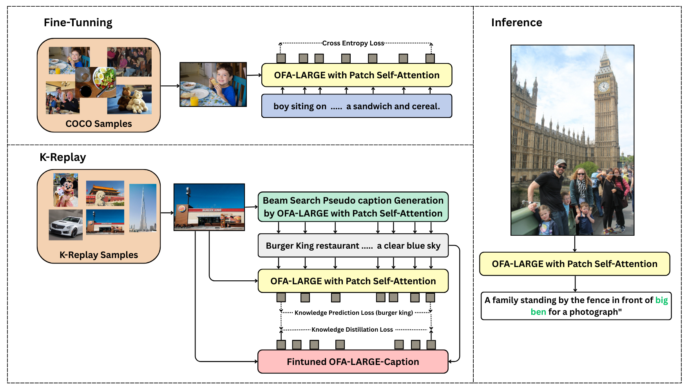
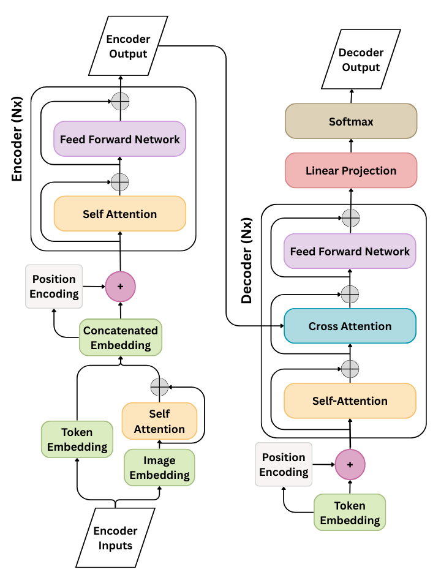
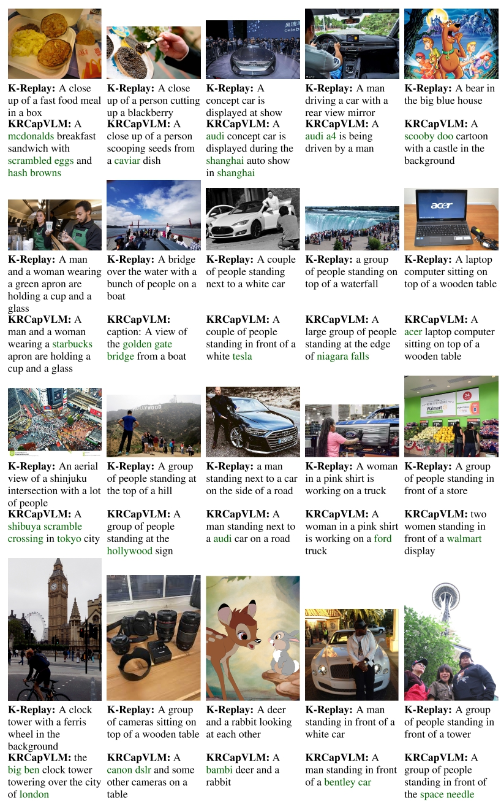

Beam-guided knowledge replay for knowledge-rich image captioning using vision-language model
a King Fahd University of Petroleum and Minerals, Dhahran, Saudi Arabia
b Imam Abdulrahman Bin Faisal University, Dammam, Saudi Arabia
c SDAIA-KFUPM Joint Research Center on Artificial Intelligence, Dhahran, Saudi Arabia
* Corresponding author. Email: muzammil.behzad@kfupm.edu.sa
Generating informative and knowledge-rich image captions remains a challenge because existing captioning models often produce generic descriptions lacking specificity and contextual depth. KRCapVLM is a knowledge replay-based image captioning framework built upon a vision-language model. It incorporates beam search decoding to encourage explicit knowledge expression, attention-based modules in the image encoder to improve visual feature representation, and training schedulers to improve optimization reliability and consistency of downstream performance.
On KnowCap, recognition accuracy improves from 50.40% to 63.30%, accompanied by a +2.3 CIDEr increase. The paper also evaluates generalization to previously unseen knowledge categories and reports stronger knowledge-aware captioning while maintaining robust generic captioning performance.

Beam search is used to generate higher-quality pseudo-captions for replay samples, allowing multiple caption possibilities to be explored rather than relying on greedy decoding.
An additional self-attention layer models interactions among image patches before visual features are fused with text.
Cosine annealing regulates optimization when the training objective combines captioning, knowledge prediction, and distillation losses.

Standard COCO image-caption samples use cross-entropy supervision. Replay samples from the CC12M subset use beam-generated pseudo-captions and jointly activate knowledge prediction and knowledge distillation objectives. The total loss is:
Ltotal = Lce + λkLkpred + λdLdistill
Karpathy split with 113,287 training images, 5,000 validation images, and 5,000 test images, each with five human-written captions.
Over 20,000 image-text pairs filtered using 122 predefined keywords. The experiments randomly select 5,000 image-keyword pairs for replay.
1,424 image-caption pairs spanning 240 knowledge categories; 424 validation and 1,000 test samples. The unseen subset contains 520 samples across 120 unseen categories.
27,000 COCO image-caption pairs + 5,000 CC12M image-keyword pairs = 32,000 combined training samples.
Values below are transcribed from Table 1 of the published paper.
| Model | KnowCap B1 | B4 | M | R | CIDEr | Rec. | COCO CIDEr |
|---|---|---|---|---|---|---|---|
| OFA zero-shot | 32.8 | 9.4 | 11.5 | 24.6 | 39.2 | 39.80% | 22.1 |
| OFA-Finetuned | 35.6 | 10.8 | 12.1 | 26.6 | 41.7 | 38.50% | 134.6 |
| + K-Replay | 58.8 | 22.7 | 20.2 | 43.0 | 90.3 | 50.40% | 130.6 |
| + Scheduler | 58.6 | 23.9 | 20.9 | 44.1 | 92.6 | 54.20% | 130.4 |
| + Beam | 57.7 | 21.9 | 20.4 | 42.5 | 92.6 | 63.30% | 130.8 |
| + Attention | 58.1 | 22.1 | 20.5 | 43.2 | 92.0 | 58.90% | 129.4 |
| Knowledge token statistics | |||
|---|---|---|---|
| Model | Avg. tokens | Captions ≥1 token | Max |
| + K-Replay | 0.154 | 15.4% | 1 |
| + Scheduler | 0.171 | 16.9% | 2 |
| + Beam | 0.223 | 22.1% | 2 |
| + Attention | 0.171 | 16.9% | 2 |
The +Beam variant produces the highest average number of explicit knowledge tokens per image and the largest proportion of captions containing at least one knowledge token.
The paper notes that richer entity-specific phrasing can slightly reduce CIDEr because CIDEr rewards n-gram consensus with reference captions.
| Model | B1 | B4 | M | R | CIDEr | Rec. |
|---|---|---|---|---|---|---|
| OFA zero-shot | 31.7 | 9.8 | 11.3 | 24.1 | 36.9 | 39.20% |
| OFA-Finetuned | 35.0 | 11.5 | 12.3 | 26.5 | 42.0 | 39.00% |
| + K-Replay | 57.9 | 23.2 | 19.6 | 42.6 | 83.9 | 45.80% |
| + Scheduler | 58.7 | 24.3 | 20.8 | 44.2 | 91.0 | 55.60% |
| + Beam | 56.2 | 21.7 | 19.5 | 41.8 | 82.6 | 57.69% |
| + Attention | 57.5 | 22.5 | 20.1 | 43.0 | 84.4 | 55.00% |
| Model | B1 | B4 | M | R | CIDEr | Rec. |
|---|---|---|---|---|---|---|
| EWC | 56.9 | 21.8 | 19.1 | 42.0 | 73.6 | 30.40% |
| Recall and Learn | 53.7 | 20.1 | 18.1 | 39.3 | 70.6 | 37.20% |
| Child-Tuning | 55.8 | 21.7 | 18.8 | 41.5 | 74.7 | 33.80% |
| Adapter | 54.4 | 20.5 | 17.6 | 40.1 | 63.7 | 30.40% |
| Vanilla Fine-tuning | 35.6 | 10.8 | 12.1 | 26.6 | 41.7 | 38.50% |
| K-Replay | 58.8 | 22.7 | 20.2 | 43.0 | 90.3 | 50.40% |
| + Scheduler | 58.6 | 23.9 | 20.9 | 44.1 | 92.6 | 54.20% |
| + Beam | 57.7 | 21.9 | 20.4 | 42.5 | 92.6 | 63.30% |
| + Attention | 58.1 | 22.1 | 20.5 | 43.2 | 92.0 | 58.90% |
Figure 3 from the paper compares K-Replay and KRCapVLM across diverse images. Knowledge concepts are highlighted in green in the original figure.

Captions can remain generic, such as “a group of people standing in front of a tower.”
Captions can express more specific real-world concepts, such as “Big Ben,” “Tesla,” “Shibuya,” “Starbucks,” “Hollywood,” “Walmart,” and “Space Needle.”
Official PyTorch OFA-Large checkpoint, with the proposed patch self-attention module.
Experiments conducted using an NVIDIA A100 GPU with batch size 8 for 10 epochs.
The paper adopts beam size 5 as a balance between recognition accuracy and computational efficiency.
Optimization: learning rate 7 × 10−6, label smoothing 0.1, distillation temperature T = 16, λk = 1.0, λd = 1.0.
Beam-search overhead: average per-step training time increased from 5.53 s with greedy decoding to 6.47 s with k = 5, a 17.1% increase. This overhead occurs during pseudo-caption generation for replay samples rather than standard downstream inference.
@article{Aljunaid2026KRCapVLM,
title = {KRCapVLM: Beam-guided knowledge replay for knowledge-rich
image captioning using vision-language model},
author = {Aljunaid, Reem and Umer, Qasim and Mahmood, Sajjad
and Niazi, Mahmood and Behzad, Muzammil},
journal = {Pattern Recognition},
volume = {179},
pages = {113568},
year = {2026},
doi = {10.1016/j.patcog.2026.113568}
}